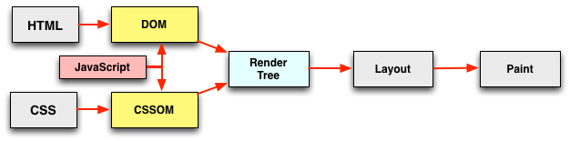
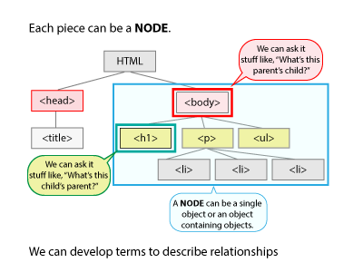
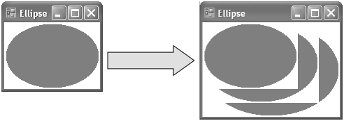

DOM
by Natalia Sirotko
Browser Page Life
The HTML DOM (Document Object Model)
When a web page is loaded, the browser creates a Document Object Model of the page
What is the DOM?
The Document Object Model (DOM) is a programming interface for HTML and XML documents.
The DOM represents a document with a logical tree. Each branch of the tree ends in a node, and each node contains objects.
Constructing the document object model
- Conversion
- Tokenizing
- Lexing
- DOM construction

CSS Object Model (CSSOM)
The parsing of the HTML document is what constructs the DOM. In parallel, there is an oft forgotten cousin, the CSSOM, which is constructed from the specified stylesheet rules and resources.
CSSOM creation
CSSOM tree

Render Tree
The CSSOM and DOM trees are combined to create the “render tree”, at which point the browser has enough information to perform a layout and paint something to the screen.
The render tree will only capture visible content.
To construct a render tree, the browser does the following:
- Starting at the root of the DOM tree, traverse each visible node.
- For each visible node finds the appropriate matching CSSOM rules and apply them.
- Emit visible nodes with content and their computed styles.
Render tree creation

Layout
When the renderer is created and added to the tree, it does not have a position and size. Calculating these values is called layout or reflow.
Paint
The browser starts to fill pixel by pixel in the screen.
This step is known as “painting” or “rasterizing”.
Repaint
Sometimes parts of the screen will need to be updated, either because of changes in geometric properties of a node or because of stylistic change, such as changing the background color. This screen update is called a repaint, or a redraw/restyle.
Repaint
Conclusion
So, here are the steps the browser goes through when loading a page:
- Browser creates the DOM and CSSOM.
- Browser creates the render tree, where the DOM and styles from the CSSOM are taken into account (display: none elements are avoided).
- Browser computes the geometry of the layout and its elements based on the render tree.
- Browser paints pixel by pixel to create the visual representation we see on the screen.
Important Data Types
Data types
- Document
- Element
- NodeList
- Attribute
- NamedNodeMap
Node
Properties
- firstChild
- lastChild
- parentNode etc.
The Node.firstChild read-only property returns the node's first child in the tree, or null if the node has no children.
First span
Node
Methods
- appendChild
- contans
- hasAttributes
- insertBefore etc.
The Node.appendChild() method adds a node to the end of the list of children of a specified parent node.
// Create a new paragraph element, and append it to the end of the document body
var p = document.createElement("p");
document.body.appendChild(p);
Element
Properties
- attributes
- innerHTML etc.
The Element.attributes property returns a live collection of all attribute nodes registered to the specified node.
// Get the first p element in the document
var para = document.getElementsByTagName("p")[0];
var atts = para.attributes;
Element
Methods
- getAttribute
- setAttribute
- matches
- remove etc.
getAttribute() returns the value of a specified attribute on the element.
let div1 = document.getElementById('div1');
let align = div1.getAttribute('align');
alert(align); // Shows the value of align for the element with id="div1"
element.classList
Methods
- contains
- add
- remove
- toggle
Toggle the class value - i.e., if the class exists then remove it and return false, if not, then add it and return true.
const div = document.createElement('div');
div.className = 'foo';
// if visible is set remove it, otherwise add it
div.classList.toggle("visible");
Document
Interfaces
- document.getElementById('id');
- document.getElementsByClassName('class-name');
- document.querySelector('div');
- document.querySelectorAll('div');
The Document method getElementById() returns an Element object representing the element whose id property matches the specified string.
Some text here
The Element method querySelectorAll() returns a static NodeList representing a list of the document's elements that match the specified group of selectors
var container = document.querySelector("#test");
var matches = container.querySelectorAll("div.highlighted > p");
Useful links
- https://developer.mozilla.org/ru/docs/DOM/DOM_Reference
- https://support.google.com/google-ads/answer/7336282?hl=en&ref_topic=7327830
- https://developers.google.com/web/fundamentals/performance/critical-rendering-path/constructing-the-object-model?hl=ru https://www.w3.org/TR/DOM-Level-1/introduction.html
- https://kleopetrov.me/2016/02/07/critical-rendering-path/
- https://rebeccapercival.wordpress.com/2014/10/10/day-nine-javascript-document-object-model-dom/